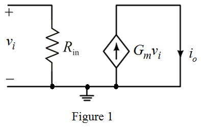
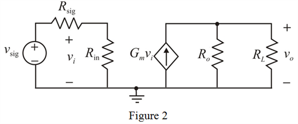

Step 1:
Refer to Figure P6.110 in the text book.
Write the expression for output current in Figure P6.110.
Derive the expression for voltage gain from output voltage.
…… (1)
Write the expression for voltage gain of the amplifier.
Substitute  for
for  in the equation.
in the equation.
Step 2:
Derive the expression for transconductance.
Substitute  for
for  in equation (1).
in equation (1).
Thus, the expression for transconductance is,
.
Step 3:
Short-circuit the output resistance to calculate  when.
when.
The modified circuit diagram is shown in Figure 1.

Step 4:
From Figure 1, the expression for output current is,
Step 5:
Draw the equivalent circuit by a signal source  with source resistance and a load resistor
with source resistance and a load resistor  are connected to the Figure P6.110.
are connected to the Figure P6.110.

Step 6:
Apply voltage division rule at the input in Figure 2.

From Figure 2, the expression for voltage gain is,
…… (2)

Thus, the expression for voltage gain of the amplifier is,
.
Step 7:
Derive the expression for overall voltage gain of the amplifier.
Substitute for  in equation (2).
in equation (2).
Thus, the expression for overall gain of the amplifier is,
.